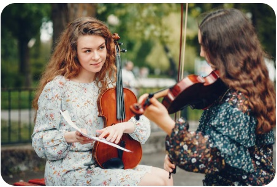
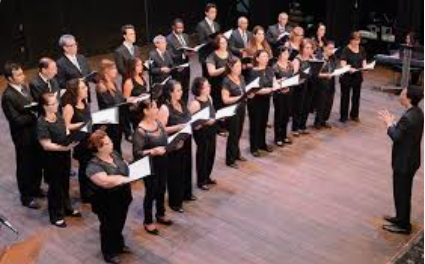

Nós atuamos em 2 frentes:
Aulas de instrumentos musicais
Aulas de canto
Uma das nossas frentes de atuação consiste em ensinar às crianças e adolescentes da comunidade como tocar instrumentos musicais clássicos.
Aula de violino em nossa unidade.
Outro diferencial de nossa organização são as aulas de canto, onde participam moradores da comunidade de todas as idades.
Ensaio do coral musical no nosso Anfiteatro dentro da comunidade.
Algumas empresas participam ativamente dos nossos projetos, colaborando principalmente, com:
- Doação de instrumentos musicais
- Doação de alimentos para as refeições durante as aulas e ensaios
- Transporte dos alunos para as apresentações.
- Despesas da Organização
Nossos parceiros e principais patrocinadores
A nossa organização é movida por trabalho voluntário. Os voluntários atuam em diversas frentes:
- Limpeza das instalações
- Manutenção
- Ensino de música.
- Preparo de refeições
- Serviços gerais
Preparação de refeições para os alunos na nossa cozinha.
Cadastre-se agora como voluntário e contribua com o futuro das nossas crianças!